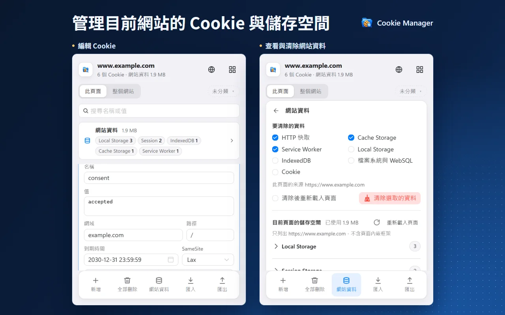
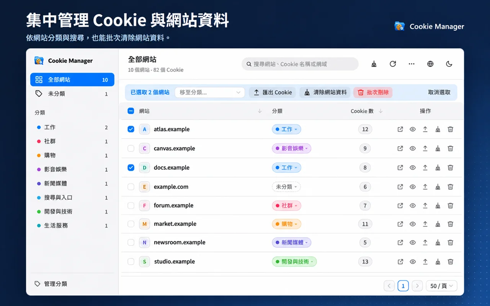

管理目前網站
從工具列直接編輯 Cookie、查看儲存空間，並依需要清除網站資料。
彩色分類、快速搜尋與批次操作，在同一個管理畫面完成。

從工具列快速處理目前的網站，或打開管理後台一次整理所有網站。
Cookie 會依主網站自動合併，再用自訂的彩色分類整理，例如工作、購物、社群。
用網站、Cookie 名稱或網域搜尋，就算有幾百個網站也能馬上找到。
單獨刪除一個 Cookie、一個網站，或批次刪除多個網站；也能清除指定網站的快取、Local Storage 與 IndexedDB，不必清掉整個瀏覽器。
點工具列圖示就能列出目前分頁的 Cookie，直接建立、編輯或刪除，所有屬性都能修改。
支援 JSON、Netscape（cookies.txt）與 Header 字串，匯入時會自動判斷格式。
介面支援繁體中文、English、日本語，並內建深色模式。
匯出的檔案可以搬到其他電腦，或交給命令列工具使用。
與常見 Cookie 編輯擴充功能相容，保留所有屬性。
[
{
"name": "session_id",
"value": "a1f9c2e7",
"domain": ".example.com",
"path": "/",
"secure": true,
"httpOnly": true,
"sameSite": "lax"
}
]
curl、wget、yt-dlp 等工具使用的 cookies.txt 格式。
# Netscape HTTP Cookie File #HttpOnly_.example.com TRUE / TRUE 1900000000 session_id a1f9c2e7
HTTP Cookie 標頭格式，可以貼到 curl -H 或 API 測試工具。
session_id=a1f9c2e7; lang=zh-TW curl -H "Cookie: session_id=a1f9c2e7" \ https://example.com
沒有分析工具、沒有廣告、沒有追蹤。
所有資料都存在瀏覽器的本機儲存空間。
所有程式都打包在擴充功能裡，可以自行檢查。
cookie-manager-v0.2.0.zip 並解壓縮。chrome://extensions（Edge 為 edge://extensions）。manifest.json 的資料夾。